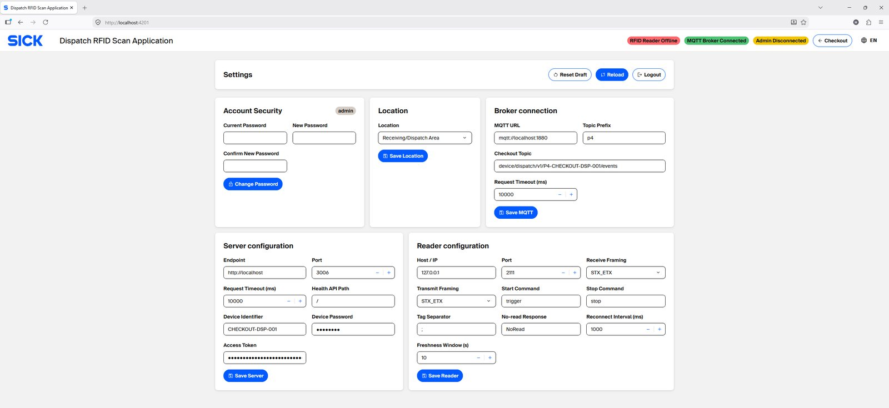
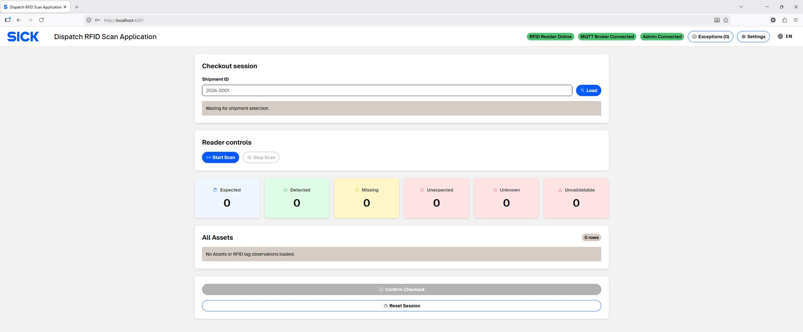
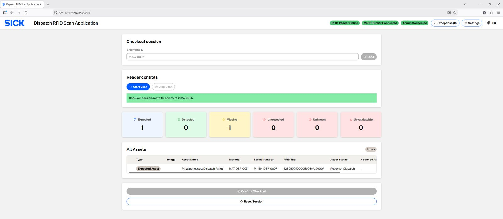
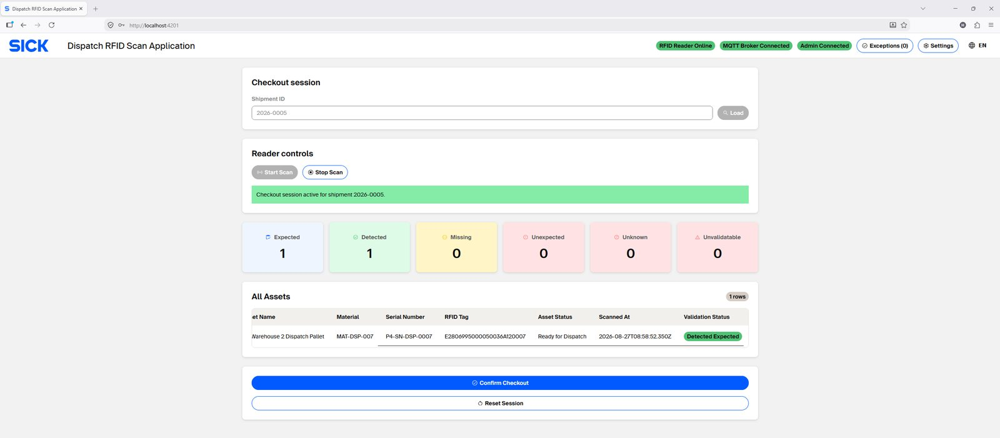
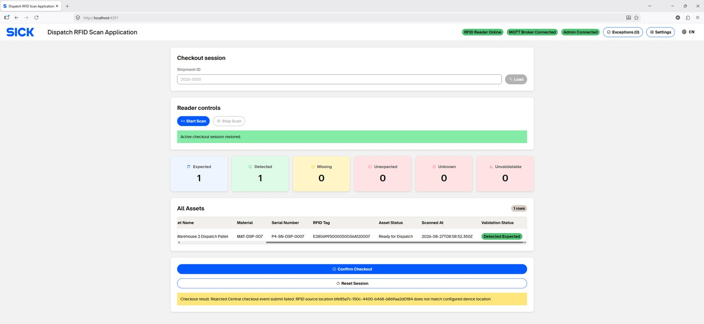
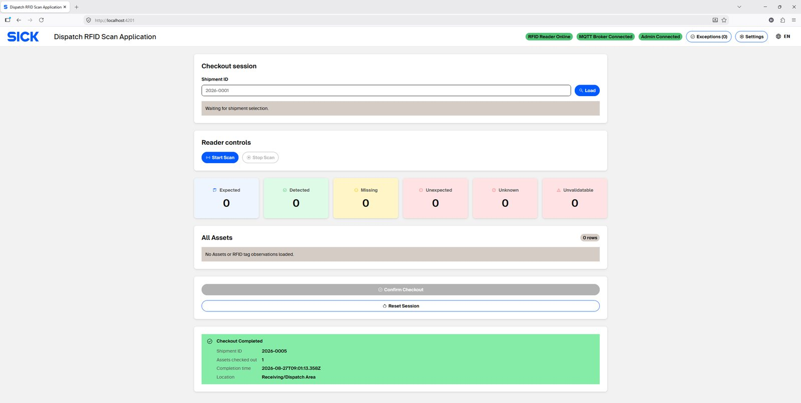

Dispatch Checkout
Use the Dispatch app to scan and check out eligible Assets for one Shipment at a time.
Configure Dispatch Settings
Open Settings, authenticate with the site Settings account, and configure the workstation as shown below.
| Area | Fields / purpose |
|---|---|
| Account Security | Change the local Settings password. |
| Location | Select the Receiving/Dispatch Location used by this workstation. |
| MQTT Integration | Broker URL, topic prefix, observation topic and request timeout. |
| Server Configuration | Central Admin endpoint/port, health API path, device identifier and technical credential/token. |
| Reader Configuration | Connected RFID reader host/IP, TCP port, receive/transmit framing, start/stop commands, tag separator, no-read response, reconnect interval and reader-status freshness window. |
Use the RFID reader address assigned to this workstation in the approved IP plan. Do not copy another workstation's reader address.

Before starting Checkout
- Admin system connected.
- MQTT broker connected.
- RFID reader is Online and its status is fresh.
- Correct Dispatch Location selected.
- Selected Shipment has eligible Assets.

Checkout procedure
- Start Checkout and select or enter the Shipment ID.
- The app loads eligible Assets for the selected Shipment.
- Start RFID scanning. Keep only the Assets intended for this Checkout inside the reader's detection zone.
- Review Expected/Detected Assets and resolve any blocking exception.
- When scanned Assets are valid, choose Confirm Checkout.
- Confirm the submission dialog.
- Wait for the central result. Success changes only the Assets in this Checkout to READY_FOR_DISPATCH.
- Remove the checked-out Assets and prepare the next partial Checkout if more Assets remain.


Partial Checkout is supported
Example: Shipment A contains A1, A2, A3 and A4. A Checkout
containing only A1 and A3 is valid when both are eligible. A2 and A4
remain unchanged and can be checked out later.
- Unscanned same-Shipment Assets are not errors for partial Checkout.
- A scanned Asset from another Shipment blocks the current Checkout.
- Unknown/ineligible/already-processed Assets block the transaction.
- Retrying the same logical Checkout is duplicate-safe and must not update an Asset twice.
Result states
| Central result | Dispatch behavior |
|---|---|
| OK | Accepted; complete the local session. |
| DUPLICATE (same logical transaction) | Safe idempotent success; do not duplicate Asset state changes. |
| FAILED | Do not consider the Checkout complete; keep/recover the session for correction or retry. |
| Unavailable / timeout | Do not assume success; use recovery/status checks. |

